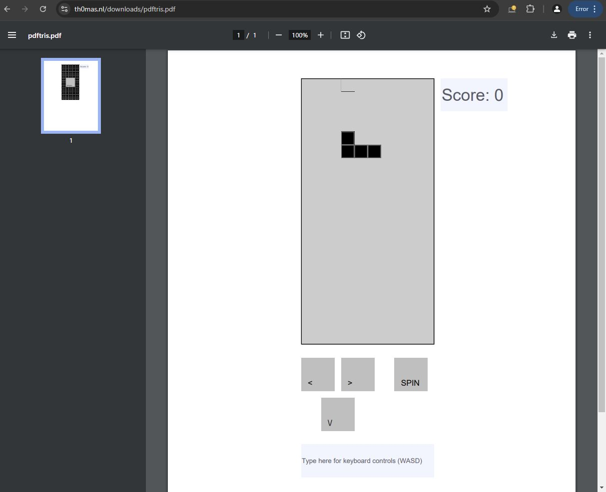

מישהו חשב פעם לשחק טטריס... בתוך קובץ PDF? 🎮
פורסם במקור ב LinkedIn
מישהו חשב פעם לשחק טטריס... בתוך קובץ PDF? 🎮
האנליסט תומאס רינסמה הפך את זה לאפשרי עם פרויקט פורץ דרך בשם pdftris – משחק טטריס מלא שפועל בתוך מסמך PDF! 🖥️
📜 בעזרת שימוש חכם בסקריפטים של PDF ובמנועים כמו PDFium ו-PDF.js, הוא הצליח להפוך את רכיבי ה-PDF הסטטיים לכלי משחק אינטראקטיביים.
🕹️ בלוקי הטטריס נעים באמצעות קלט מהמקלדת, כשהמשחק רץ ישירות בדפדפן – אין צורך בהתקנות או תוספים!
💡 מה שמדהים במיוחד בפרויקט הזה הוא שהוא מדגים איך טכנולוגיה עתיקה שאנחנו מכירים מזמן יכולה לשמש למטרות יצירתיות ומרגשות הרבה מעבר לייעוד המקורי שלה. הוכחה חיה לכך שעם קצת דמיון, אפשר לקחת טכנולוגיות ותיקות ולהעניק להן חיים חדשים לחלוטין.
🌐 הפרויקט הזה הפך במהרה לשיחת היום באתר Hacker News, הוא זכה ליותר מ-220 תגובות שנעו בין התפעלות מהיצירתיות למחשבות על האפשרויות העתידיות של קבצי PDF אינטראקטיביים: מתן חוויות למידה אינטראקטיביות, יצירת תרגולים חינוכיים או אפילו שימושים עסקיים חדשניים.
רוצים לנסות? המסמך זמין באתר של היוצר:
https://lnkd.in/d9KgnQsF
